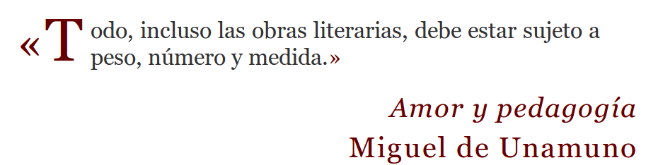
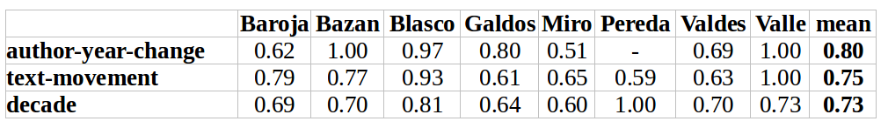

<!doctype html>
<html lang="en">
<head>
<meta charset="utf-8">
    <title>What does Delta see inside the Author?</title>
<meta name="author" content="José Calvo">
<meta name="description" content="Slides">
<meta name="apple-mobile-web-app-capable" content="yes">
<meta name="apple-mobile-web-app-status-bar-style" content="black-translucent">
<meta name="viewport" content="width=device-width, initial-scale=1.0, maximum-scale=1.0, user-scalable=no, minimal-ui">
<link rel="stylesheet" href="css/reveal.css">
<link rel="stylesheet" href="css/theme/simple.css" id="theme">
<link rel="stylesheet" href="lib/css/zenburn.css">
<script>
var link = document.createElement( 'link' );
link.rel = 'stylesheet';
link.type = 'text/css';
link.href = window.location.search.match( /print-pdf/gi ) ? 'css/print/pdf.css' : 'css/print/paper.css';
document.getElementsByTagName( 'head' )[0].appendChild( link );
</script>
<!--[if lt IE 9]>
<script src="lib/js/html5shiv.js"></script>
<![endif]-->
</head>

<body>
<div class="reveal">
<div class="slides">
<section data-markdown="" data-separator="^\n---\n" data-separator-vertical="^\n--\n" data-charset="utf-8">
<script type="text/template">

<!--  vvvvv THIS IS WHERE THE CONTENT GOES! vvvvvvv  -->

### What does Delta see inside the Author?
#### Evaluating Stylometric Clusters with Literary Metadata
<br/>

### ¿Qué ve Delta dentro del autor?
#### Evaluación de clusters estilométricos mediante metadatos literarios
<hr/>
<small><b>José Calvo Tello</b></small>
<br/>
<small>HDH, 2017, Málaga</small>
<br/>
<small>https://github.com/morethanbooks/publications/Delta_inside_Author/</small>
<br/>
<hr/>
<p></img>&nbsp;&nbsp;&nbsp;&nbsp;&nbsp;&nbsp;</img>&nbsp;&nbsp;&nbsp;&nbsp;&nbsp;&nbsp;</img></p>


--
## Índice
<br/>
* Estilometría más allá de la autoría
* Métodología
* Corpus y metadatos
* Aspectos literarios
* Subgénero
* Etiquetas de subgéneros
* Período
* Conclusiones

---
# Estilometría más allá de la autoría
## Estudios digitales literarios


--
</img>

</img>

--
## Estudios digitales literarios

* Aplicación y desarrollo de herramientas informáticas a datos (textos) literarios
* Machine Learning
* Estilometría (más allá de la autoría)
* Topic modeling
* Word embeddings (word2vec)
* Grafos y redes sociales


--
## Estilometría
</img>
* En español, trabajos de: de la Rosa and Suárez 2016, Fradejas Rueda 2016, Rißler-Pipka 2016, Blasco 2017, Calvo Tello and Cerezo Soler 2017, Hernández Lorenzo 2017, Rojas Castro 2017


--
## Estilometría más allá de autoría
* Estudios sobre un solo autor (Jannidis and Lauer, 2014; Hoover, 2014)
* *Romanistentag* 2017 Zúrich: _Delta inside Valle-Inclán: Stylometric Clustering and Analyse of his Novels and Short Stories_

--
## Delta dentro Valle
<br/>

</img>

--
## Delta dentro Valle
<br/>

* Narrador vs. nivel social del protagosnista

</img>

--
## ¿Qué ve Delta dentro del autor?
<br/>

* ¿Cómo podemos evaluar los resultados de manera formal?
* ¿Qué metadatos aparecen en los subclusters creados por Delta?
* ¿Qué parámetros (versión, MFW) son los más apropiados?
* ¿Qué distingue un método de autoría cuando no puede diferenciar autoría?

---

# Métodología

--
## Detalles
<br/>
* Stylo (Eder, Kestemont, Rybicki 2016)
* Scripts en Python
* Classic, Eder y Cosine Delta
* 500 - 10.000 (+500)
* Dendrogramas (Ward)
* Metadatos
* Homogeneidad
* 8 subcorpus de un único autores


--

## Homogeneidad
<br/>
* Medida de evaluación de clusters (Rosenberg and Hirschberg, 2007). Implementada en Python
* Un subcluster homogéneo es un grupo de casos (textos) que pertenecen a la misma clase (valor de metadato)
* Valores entre 0 (peor que aleatorio) y 1 (homogeneidad perfecta)
* Un subcluster homogéneo NO tiene que contener todos los casos de la clase
* *Groundtruth*: metadatos


--

## Optimización de parámetros
### Versión Delta

* **Cosine**

</img>

--

## Optimización de parámetros
### Cantidad de palabras más frecuentes (MFW)

* **500-2000**

</img>

---
# Corpus y metadatos

--

## Corpus
* _Corpus of Spanish Novels from 1880-1939_. Part from it in <a href="https://github.com/cligs/textbox">Textbox</a>:  https://github.com/cligs/textbox
* 170 novelas
* \> 1,2 millones de palabras (tokens)
* Más de 10 textos por autor:
* Baroja, Bazán, Blasco, Galdós, Miró, Pereda, Valdés, Valle

</img>

--

## Corpus

</img>

--

## Metadatos
* Subgénero
* Origen de género
* Fenómenos literarios
* Período
* **Recategorizado como valores binarios**

</img>

---
# Aspectos literarios

--
## Homogeneidad

</img>

--
## Media en gráfico
</img>

--

</img>


--
## Test de significancia estadística

* ¿Es realmente significativa la media o es fruto de la variabilidad?
* t test
* Ningún metadato está por encima del *baseline* de manera estadísticamente significativa
* La forma necesitaría más ejemplos (hasta ahora solo dos)

--

</img>

---
# Subgénero

--
## Homogeneidad

</img>
</img>

--
## Significancia estadística
* Ningún subgénero de novela
* De nuevo novela dialogada tiene demasiados pocos ejemplos

---
# Origen de género

--
## Homogeneidad
</img>

</img>

--
## Significancia estadística
* **La homogeneidad de *Grupo de textos* es estadísticamente por encima del baseline**

---
# Período

--
## Homogeneidad
</img>

</img>

* **t test: los tres son estadísticamente superiores al baseline**

---
# Comparando metadatos

--
## Señales detectadas por Delta

1. Autor
2. ¿Forma? (¿género?)
3. **Período**
4. **Grupo de textos**
5. Subgénero literario

---
# Aplicación a Valle

--
## Grupos de textos en novelas de Valle

* Sonatas, Carlistas, esperpénticas y otros

</img>

--
## Periodización
* 1905?: Maeztu (cfr. Sotelo Vázquez 1986)
* 1920?: Mainer (1980; 2009)

</img>

---
# Conclusiones

--
## Resumen

* Utilización de Delta con 8 corpus de un único autor
* Evaluación de clusters mediante homogeneidad
* Metadatos

--
## Conclusiones
* Cosine Delta, 500-2000 MFW
* Utilización de método estilométrico para nuevas tareas
* Grupo de textos y periodización del autor
* Tener en cuenta en tests estilométricos
* Forma, canon, narrador, período de la acción y nivel social del protagonista por encima del baseline sin significancia estadística
* Señales detectadas por Delta: Autor, ¿forma-género?, periodización, grupo de textos, subgénero

--
## Pasos futuros
* Evaluación de datos desde matriz Delta mediante *valores p*
* Ampliación a otros autores: Wenceslao Fernández Flórez, Serna, Sénder, Felipe Trigo, Concha Espina, Zamacois
* Ampliación a otros géneros literarios: teatro, poesía, cuentos
* Aplicación de método a autores específicos

---

</img>

## ¡Gracias por la atención!

--

## Bibliografía

* <small>Burrows, John. 2002. ‘“Delta”: A Measure of Stylistic Difference and a Guide to Likely Authorship’. <i>Literary and Linguistic Computing</i> 17 (3): 267–87. doi:10.1093/llc/17.3.267.</small>
* <small>Büttner, Andreas, and Thomas Proisl. 2016. ‘Stilometrie interdisziplinär: Merkmalsselektion zur Differenzierung zwischen Übersetzer- und Fachvokabular.’ In <i>DHd 2016: Modellierung, Vernetzung, Visualisierung</i>, 66–69. Leipzig: Universität Leipzig. http://www.dhd2016.de/abstracts/sektionen-002.html.</small>
* <small>Calvo Tello, José, and Juan Cerezo Soler. 2016. ‘La Conquista de Jerusalén ​&nbsp; ¿de Cervantes?&nbsp; Análisis Estilométrico Sobre Autoría En El Teatro Del Siglo de Oro Español.’ <i>Digital Humanities Quarterly</i> 10. http://www.digitalhumanities.org/dhq/.</small>
* <small>Eder, Maciej, Mike Kestemont, and Jan Rybicki. 2016. ‘Stylometry with R: A Package for Computational Text Analysis.’ <i>The R Journal</i> 16 (1): 1–15.</small>
* <small>Hempfer, Klaus W. 2014. ‘Some Aspects of a Theory of Genre.’ In <i>Linguistics and Literary Studies/Linguistik Und Literaturwissenschaft. Interfaces, Encounters, Transfers/Begegnungen, Interferenzen Und Kooperationen</i>, edited by Monika Fludernik and D. Jacobs, 405–22. Berlin: De Gruyter.</small>
* <small>Hettinger, Lena, Isabella Reger, Fotis Jannidis, and Andreas Hotho. 2016. ‘Classification of Literary Subgenres.’ In <i>Digital Humanities Im Deutschsprachigen Raum Konferenz</i>, 154–58. Leipzig: Universität Leipzig.</small>
* <small>Hoover, David L. 2004. ‘Testing Burrows’s Delta.’ <i>Literary and Linguistic Computing</i> 19 (4): 453–75. doi:10.1093/llc/19.4.453.</small>
* <small>———. 2014. ‘A Conversation Among Himselves: Change and the Styles of Henry James.’ In <i>Digital Literary Studies</i>, edited by David L. Hoover, Jonathan Culpeper, and Kieran O’Halloran, 90–119. New York &amp; London: Routledge.</small>
* <small>Jannidis, Fotis, and Gerhard Lauer. 2014. ‘Burrows’s Delta and Its Use in German Literary History.’ In <i>Distant Readings. Topologies of German Culture in the Long Nineteenth Century</i>, edited by Matt Erlin and Lynne Tatlock, 29–54. Rochester: Camden House. gerhardlauer.de/index.php/download_file/view/335/1/.</small>
* <small>Jannidis, Fotis, Steffen Pielström, Christof Schöch, and Thorsten Vitt. 2015. ‘Improving Burrows’ Delta – An Empirical Evaluation of Text Distance Measures.’ In <i>Digital Humanities 2015 Conference Abstracts</i>. Sydney: ADHO.</small>
* <small>Oakes, Michael. 2009. ‘Corpus Linguistics and Stylometry.’ In <i>Corpus Linguistics: An International Handbook</i>, edited by Anke Ludeling and Merja Kyto, 2:1070–90. Mouton de Gruyter. http://www.degruyter.de/cont/fb/sk/detailEn.cfm?id=IS-9783110207330-1.</small>
* <small>Rißler-Pipka, Nanete. 2016. ‘Avellaneda y los problemas de la identificación del autor. Propuestas para una investigación con nuevas herramientas digitales.’ In <i>El otro Quijote. La continuación de Avellaneda y sus efectos</i>, edited by Hanno Ehrlicher, 27–51. Mesa Redonda. Augsburg: Universität Augsburg.</small>
* <small>Rosa, Javier de la, and Juan Luis Suárez. 2016. ‘The Life of Lazarillo de Tormes and of His Machine Learning Adversities Non-traditional authorship attribution techniques in the context of the Lazarillo.’ <i>Lemir</i>, no. 20: 373–438.</small>
* <small>Rosenberg, Andrew, and Julia Hirschberg. 2007. ‘V-Measure: A Conditional Entropy-Based External Cluster Evaluation Measure.’ In , 410–20. Prague: Association for Computational Linguistics. https://aclweb.org/anthology/D/D07/D07-1043.pdf.</small>
* <small>Schöch, Christof. 2013a. ‘Big ? Smart? Clean? Messy? Data in the Humanities.’ <i>Journal of the Digital Humanities</i> 2 (3): 2–13.</small>
* <small>———. 2013b. ‘Fine-Tuning Our Stylometric Tools: Investigating Authorship and Genre in French Classical Theater.’ In <i>Digital Humanities 2013: Conference Abstracts</i>. Lincoln: UNL. http://dh2013.unl.edu/abstracts/ab-270.html.</small>
* <small>———. 2014. ‘Corneille, Molière et les autres. Stilometrische Analysen zu Autorschaft und Gattungszugehörigkeit im französischen Theater der Klassik.’ In <i>Literaturwissenschaft im digitalen Medienwandel</i>, edited by Christof Schöch and Lars Schneider, 130–57. Beihefte von Philologie im Netz 7. http://web.fu-berlin.de/phin/beiheft7/b7t08.pdf.</small>
* <small>Underwood, Ted. 2014. ‘Understanding Genre in a Collection of a Million Volumes, Interim Report.’ https://figshare.com/articles/Understanding_Genre_in_a_Collection_of_a_Million_Volumes_Interim_Report/1281251.</small>

---

<!--^^^^^^^ DON'T TOUCH UNLESS YOU KNOW WHAT YOU'RE DOING :-) ^^^^^^^-->


--
</script>
</section>
</div>
</div>

<script src="lib/js/head.min.js"></script>
<script src="js/reveal.js"></script>
<script>
// Full list of configuration options available at:
// https://github.com/hakimel/reveal.js#configuration
Reveal.initialize({
    controls: true,
    progress: true,
    history: true,
    center: true,
    transition: 'slide', // none/fade/slide/convex/concave/zoom
    // Optional reveal.js plugins
    dependencies: [
        { src: 'lib/js/classList.js', condition: function() { return !document.body.classList; } },
        { src: 'plugin/markdown/marked.js', condition: function() { return !!document.querySelector( '[data-markdown]' ); } },
        { src: 'plugin/markdown/markdown.js', condition: function() { return !!document.querySelector( '[data-markdown]' ); } },
        { src: 'plugin/highlight/highlight.js', async: true, callback: function() { hljs.initHighlightingOnLoad(); } },
        { src: 'plugin/zoom-js/zoom.js', async: true },
        { src: 'plugin/notes/notes.js', async: true }
        ]
    });
</script>
</body>
</html>
